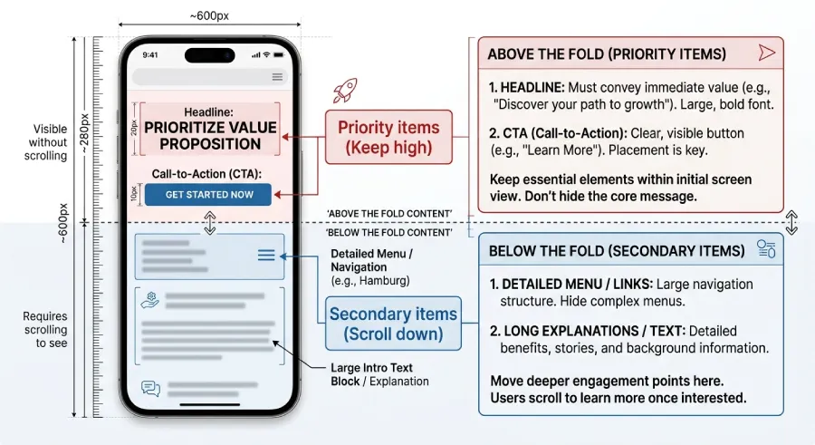

Open your website on your phone right now, without scrolling. What you're looking at is roughly 600 pixels of vertical space, give or take, depending on the phone. That's it. That's your entire budget to convince a stranger you're worth their time, before they have to lift a thumb and decide whether continuing is worth the effort.
Most professionals design as if they have far more room than that. They think in terms of the whole homepage, the whole story, everything they want someone to eventually know. But "eventually" only happens if the first 600 pixels earn it.
Why the Number Is Smaller Than You Think
A phone screen looks tall when you hold it in your hand, but a large portion of that height isn't actually available to your website. The status bar takes some. The browser's own address bar takes more. On many phones, a bottom navigation bar takes a slice too. What's left, the space actually showing your content before any scrolling happens, tends to land somewhere around 550 to 650 pixels tall.
For comparison, that's roughly the height of a large photograph and a couple of short sentences. Not a headline, a paragraph, a photo, and a button all fighting for space. Something has to be prioritized, because not everything fits.
What Actually Deserves a Spot in That Space
Think of those 600 pixels as a small, expensive piece of real estate. Every element placed there has a cost, because it pushes something else further down, into the part of the page a large share of visitors will never reach.
What Belongs There
A short line that states clearly what you do and who it's for. A visual element, a photo or a simple graphic, but only if it doesn't push the message further down. And a call-to-action button, visible without any scrolling at all.
What Doesn't Belong There
A large navigation menu that eats a third of the visible height before any actual content appears. A long introductory sentence explaining your philosophy or background. Multiple competing buttons, when one clear one would do more work. Every one of these steals space from the three things that actually earn their place.

Why This Budget Gets Ignored So Often
Most websites get designed and reviewed on a desktop screen, where this constraint doesn't exist. On a large monitor, you can fit a full navigation bar, a large headline, a subheading, an image, and a button, all without scrolling, and it still looks spacious. That same content, unchanged, gets crushed the moment it lands on a phone, because the actual visible space shrank to a fraction of what it was during the review.
The content isn't the problem. The assumption about how much room it has is.
How to Design Around the Real Number
Start from the smallest available space, not the largest. Decide, in order of priority, what absolutely must appear before any scrolling happens, and be willing to cut anything that doesn't make that list. A shorter, sharper headline usually beats a longer, more complete one, simply because it fits and gets read. A single strong call-to-action usually beats two or three softer ones competing for the same limited inches.
Everything else, your full story, your credentials, your detailed services, still belongs on the page. It just belongs further down, where a visitor who's already decided to stay will find it, not in the small space that decides whether they stay at all.
The Bottom Line
You don't get a full page to make a first impression on mobile. You get about 600 pixels. Treat that space like the most valuable real estate on your entire website, because for most of your visitors, it's the only part of the site that gets a fair chance.
Want to know exactly what belongs in your own 600 pixels?
At Evida Studio, we design the mobile view first, starting with the limited space that actually decides whether someone stays.
Let's Talk About Your Project